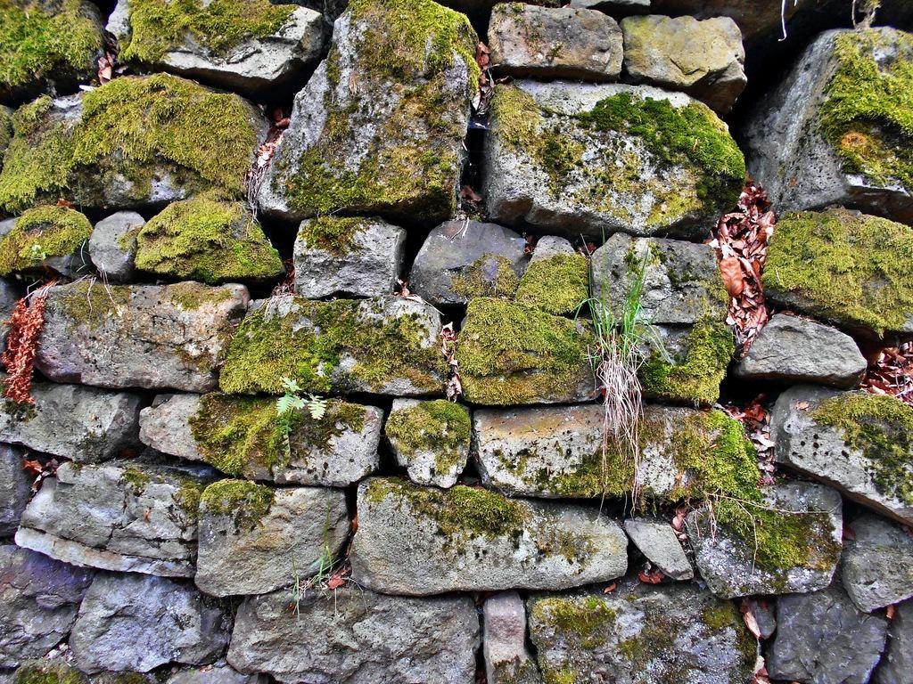
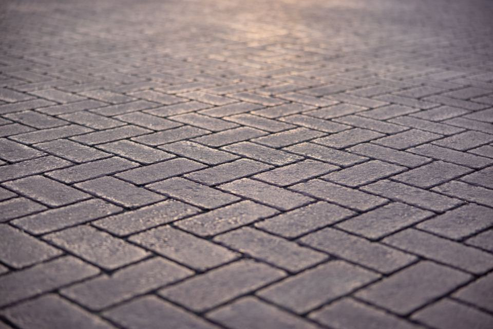
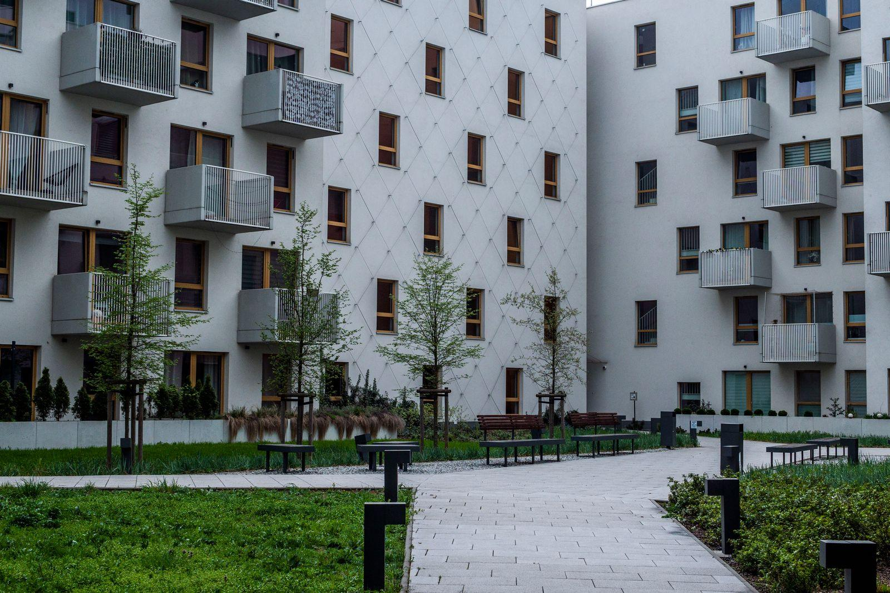
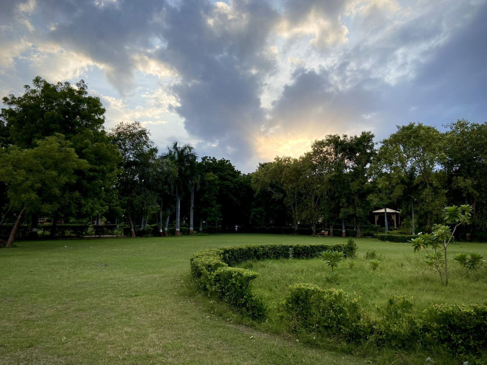
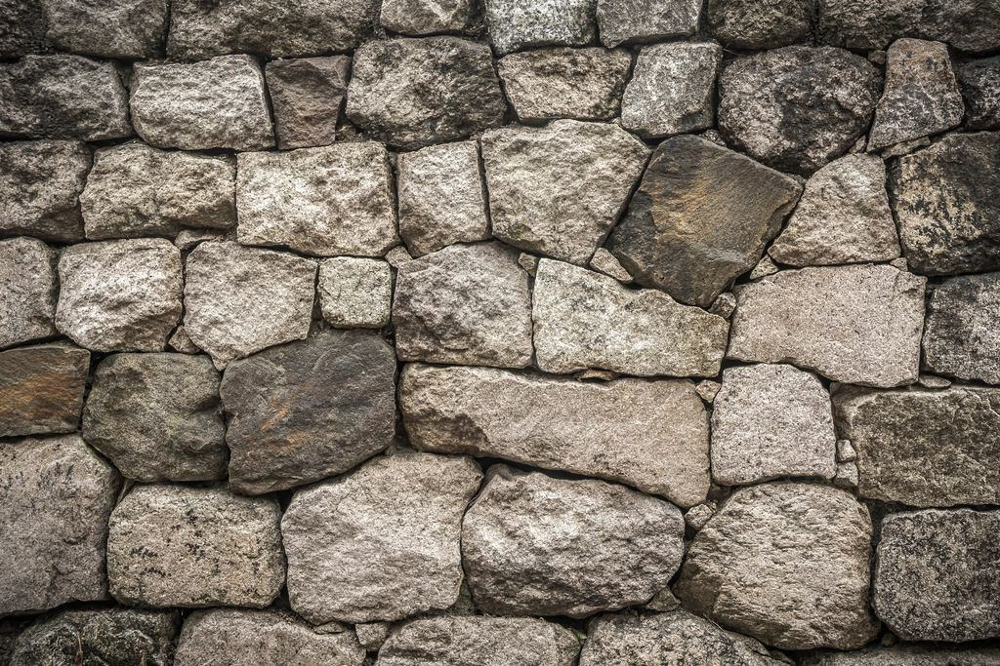

Referenser
Ett urval av uppdrag vi har utfört.
- 2025

Villa Auroravägen
47 meter granitmur från 1912 återuppbyggd med originalstenen.
- 2025

Kottla gård
220 kvadratmeter återbrukad storgatsten från Stockholms innerstad.
- 2024

Villa Tattby
Elva steg i flammad bohusgranit med infälld belysning.
- 2024

Sjötomt i Ekudden
Ölandskalksten runt pool och stödmur mot sjön.
- 2026

Villa Mörby backe
Terrasserad trädgård med tre kallmurar och skiffertrappa.
- 2025

Ingarö sommarvilla
Kallmurar i lokal sten från tomten, sprängd vid husbygget.
Villaägare och arkitekter
Charlotte E. · Djursholm”De numrerade varje sten i vår gamla mur och byggde upp den igen så att man inte ser någon skillnad – utom att den står rakt nu.”
Sofie A. · Landskapsarkitekt, Stockholm”Vi arbetar ofta med Lindqvist & Wiik i våra projekt. De förstår skissen och förbättrar den på plats när stenen kräver det.”
Magnus T. · Lidingö”Uppfarten av gammal gatsten är det första alla grannar frågar om. Fyra år senare har inte en enda sten rört sig.”